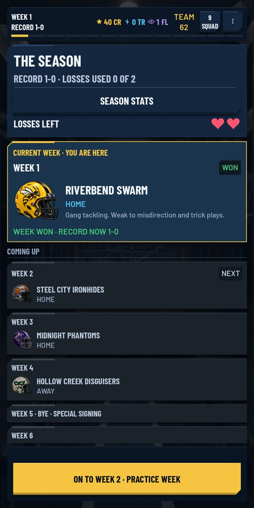
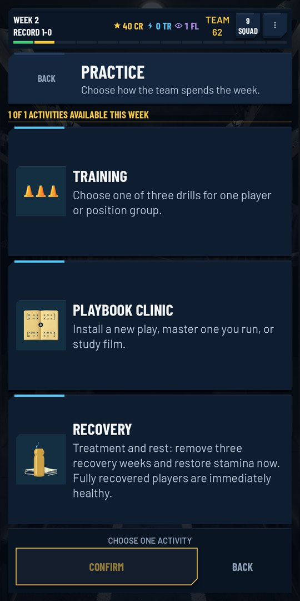
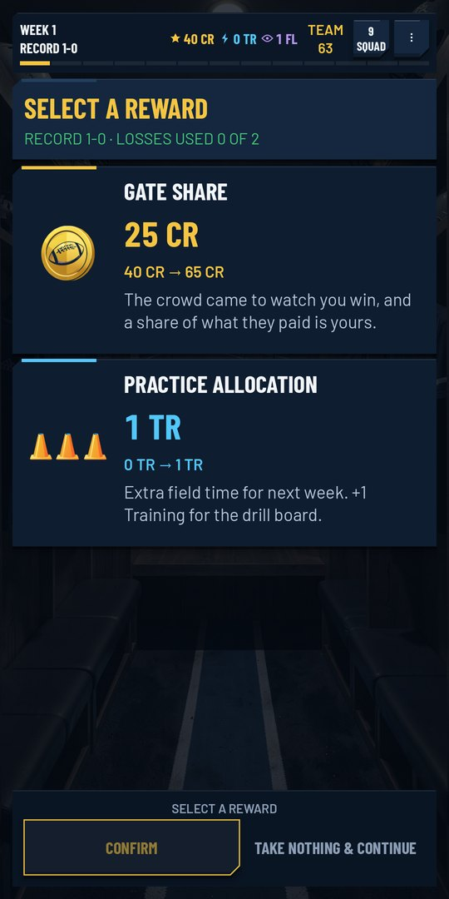

The game
Thirteen weeks. Two losses. No second chances.
Draft your players, install your playbooks, hire your staff and take one of nine franchises through a thirteen-week season. Two losses and the season is over.
You call it, or your coach does
Before every snap you get a hand of plays from your playbook, or of defensive calls when they have the ball. Pick one, flip it, or let the clock run and your coach makes the call. Turn on AI Coach and just watch.
Every snap is played, not rolled
Routes, blocks, pass rush moves, the quarterback's reads, the tackle: each play is simulated on the field in front of you. When a drive stalls, the play log shows you why.
Losing is part of it
A lost season is over. Big seasons unlock new coaches, plays and options for the runs that follow, and a new Daily Season every day gives everyone the same start.
Screens
Shape it every week



In-development screens. Art and layout may change before release.
Build it your way
- A three-round draft to start every run
- 70 plays and 21 defensive calls
- Practice weeks, film study, staff hires, free agents and game plans
- Player traits, synergies and injuries that force hard lineup calls
- Opponents that learn: repeat a play and they start reading it
Made for phones
- Portrait, one-handed, readable at phone size
- Playback speed from 1x to 4x
- Text size, reduced motion and separate volume controls
- No account and no internet connection needed
- No ads, no in-app purchases, no energy timers, no data collection